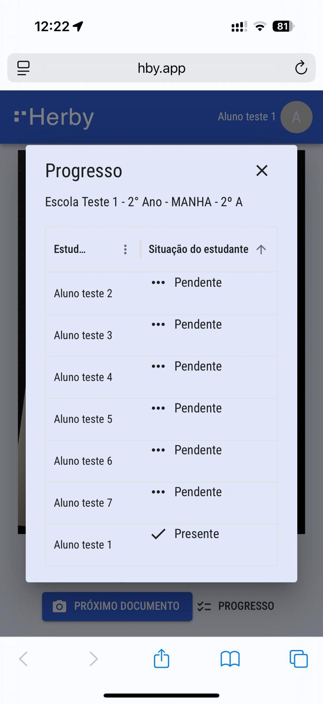
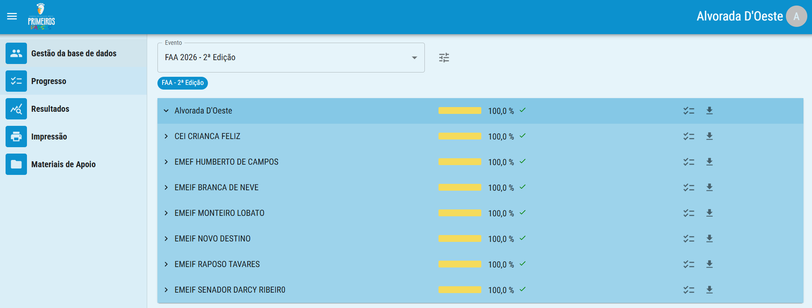
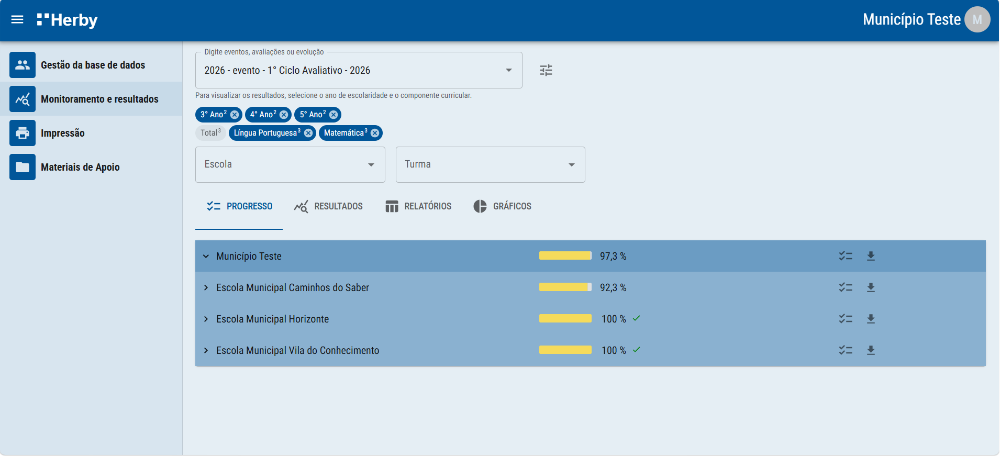

Acompanhamento do andamento do processamento vai ser muito bom se vc fizer isso pelo menos uma vez, pelo celular e pelo painel.
É possível acompanhar o progresso do processamento das fotos também pelo celular.
Clicando no botão Progresso, você tem acesso fácil a lista de estudantes da mesma turma do último cartão de respostas processado.

É possível acompanhar o progresso do processamento das fotos também pelo celular.
Clicando no botão Progresso, você tem acesso fácil a lista dos formulários do polo.
Na área de progresso, é possível monitorar o andamento das avaliações por evento, em tempo real.

A visualização pode ser personalizada, alternando entre os eventos e avaliações disponíveis.
A visualização pode ser personalizada por diversos filtros. Você deve selecionar a avaliação e a unidade que desejar acompanhar o processamento ou acessar os resultados, desde o nível geral até de uma turma específica.
